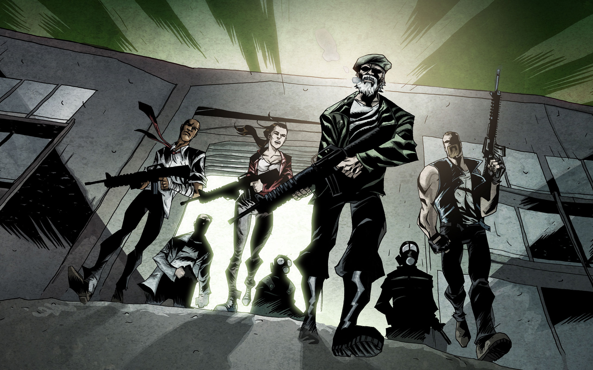

Historia
La historia de Left 4 Dead 2 se desarrolla aproximadamente tres semanas después del primer brote de un patógeno altamente contagioso conocido como la "Gripe Verde". A diferencia de los zombis tradicionales, estos infectados no están muertos, sino que sufren una forma extrema de rabia mutante que los vuelve hiperagresivos.
La trama sigue a cuatro nuevos supervivientes que se encuentran por primera vez en un hotel de Savannah, Georgia, justo cuando los últimos helicópteros de rescate abandonan la ciudad.
Protagonistas
El grupo es una mezcla improbable de personas que resultaron ser "Portadores" (infectados asintomáticos que pueden propagar el virus sin enfermarse):
- Coach: Un antiguo entrenador de fútbol americano de instituto.
- Ellis: Un joven mecánico entusiasta y parlanchín de Savannah.
- Nick: Un cínico apostador y estafador de traje blanco.
- Rochelle: Una productora asociada de una cadena de televisión local.
